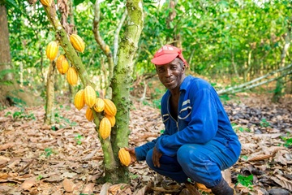

Cocoa-Growing Regions
Discover some of the important cocoa-growing areas of Ghana and learn about their agricultural significance.
Explore regions →
GHANA'S COCOA STORY
Explore the journey of cocoa in Ghana, from the farms where cocoa pods are grown to the beans that become products enjoyed around the world.
Explore Cocoa RegionsWELCOME
Cocoa is one of Ghana's most important agricultural products. Cocoa farming provides livelihoods for many farming communities and contributes to the country's agricultural economy.
Ghana Cocoa Guide introduces visitors to the people, places, and processes behind Ghanaian cocoa.
Learn how cocoa is cultivated, harvested, fermented, dried, and prepared for further processing.
Learn about the process →DID YOU KNOW?
EXPLORE
Discover some of the important cocoa-growing areas of Ghana and learn about their agricultural significance.
Explore regions →Follow the major stages involved in producing cocoa, from planting and harvesting to fermentation and drying.
View the process →Visit our production page to use the form and share what you learned about Ghanaian cocoa.
Open the form →